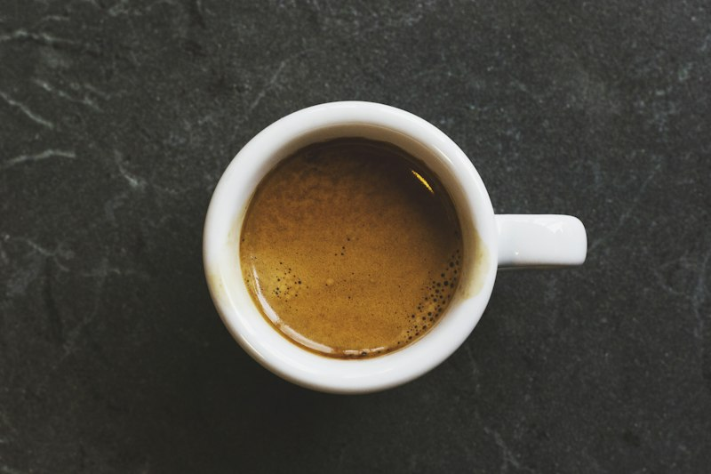
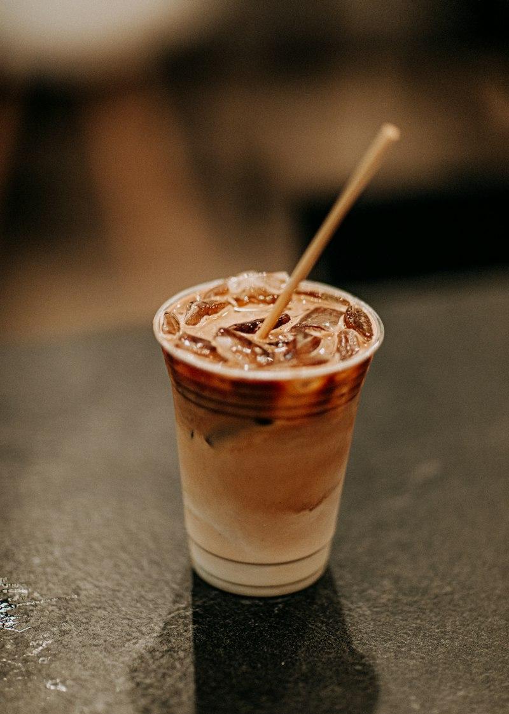
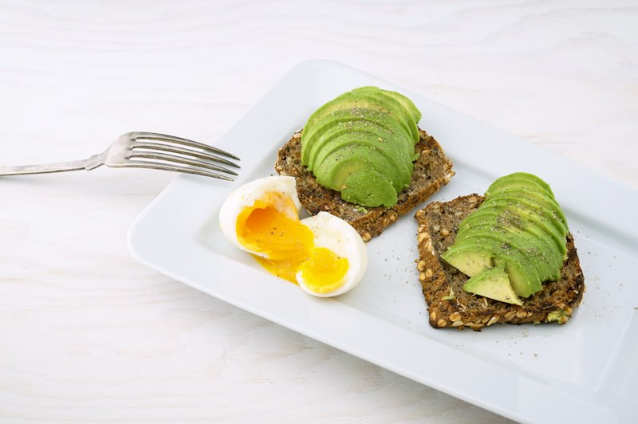

Descubrí nuestros productos estrella, elaborados con materia prima de primera calidad y mucho amor.

Un clásico intenso y aromático para empezar el día con energía.
Equilibrio perfecto entre espresso, leche vaporizada y suave espuma.

Doble ristretto intenso cubierto con una fina capa de leche texturizada.

Pan de masa madre, palta pisada fresca, tomates cherry confitados y mix de semillas.